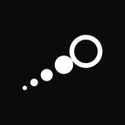
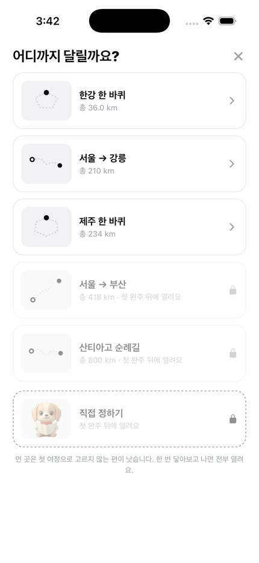
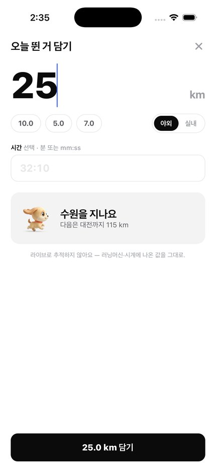
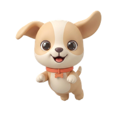

닿기뛰는 동안은
켜두지 않아도 됩니다
닿기는 러닝을 따라다니지 않습니다. 끝나고 나온 숫자만 담으면, 그만큼 지도 위에서 목적지에 가까워집니다.
App Store 에서 받기
iOS 15 이상 · 계정 없음 · 무료


닿기닿기는 러닝을 따라다니지 않습니다. 끝나고 나온 숫자만 담으면, 그만큼 지도 위에서 목적지에 가까워집니다.
파리까지 8,966km는 막막하지만,
베이징까지 200km는 이번 주에 갈 만합니다.
쓰는 법
설정할 것도, 연결할 것도 없습니다. 계정을 만들지 않고 바로 시작합니다.

01
한강 한 바퀴 36km부터 산티아고 순례길 800km까지. 처음에는 가까운 곳부터 열립니다.

02
러닝머신이든 시계든 상관없습니다. 담기 전에 어디까지 가는지 미리 보여줍니다.

03
수원을 지나고, 대전을 지나고. 도시를 하나씩 통과하며 목적지로 갑니다.
직접 정하기
지도에서 두 곳을 찍으면 거리는 알아서 계산됩니다. 가는 길의 도시들도 이정표로 세워둡니다. 지도는 고를 때만 씁니다 — 그다음부터 여정 화면은 인터넷 없이 동작합니다.
서울 → 부산 325 km 서울 → 파리 8,966 km 서울 → 뉴욕 11,053 km

도착
며칠이 걸렸는지, 몇 번을 달렸는지가 남습니다. 완주한 여정은 컬렉션에 쌓이고, 첫 완주가 나머지 여행지를 여는 열쇠가 됩니다.

같이 가는 친구
빈 화면에서, 이정표를 지날 때, 도착했을 때. 필요한 순간에만 나타납니다.





약속
가입도 로그인도 없습니다. 기록은 이 기기 안에만 있고, 우리 서버는 아예 존재하지 않습니다.
달리는 동안 GPS를 켜지 않습니다. 여행지를 고를 때만 지도를 쓰고, 좌표는 저장하지 않습니다.
분석 도구를 넣지 않았고 광고 식별자를 읽지 않습니다. 팔 것이 없으니 모을 이유도 없습니다.
기록을 파일 한 장으로 내보내 어디든 보관하세요. 기기를 바꿔도 그대로 되돌립니다.
시작
오늘 뛴 거리를 한 번 담아보세요. 다음 이정표까지 얼마나 남았는지 바로 보입니다.